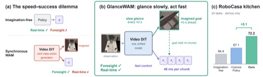

GlanceWAM: Sparse Test-Time Imagination for World-Action Models
Linhan Wang, Zijian An, Mingyuan Zhang, Chen Dai, Yi Xu, Can Cui, Zichong Yang, Yinlin Chen, Lifeng Zhou, Chang-Tien Lu
Under review, 2026 *
Decouples asynchronous background video imagination from a latency-free action decoder inside one video diffusion transformer — 72.2% success on RoboCasa and 99.0% on LIBERO, 24x faster than synchronous baselines at 48ms per action chunk.